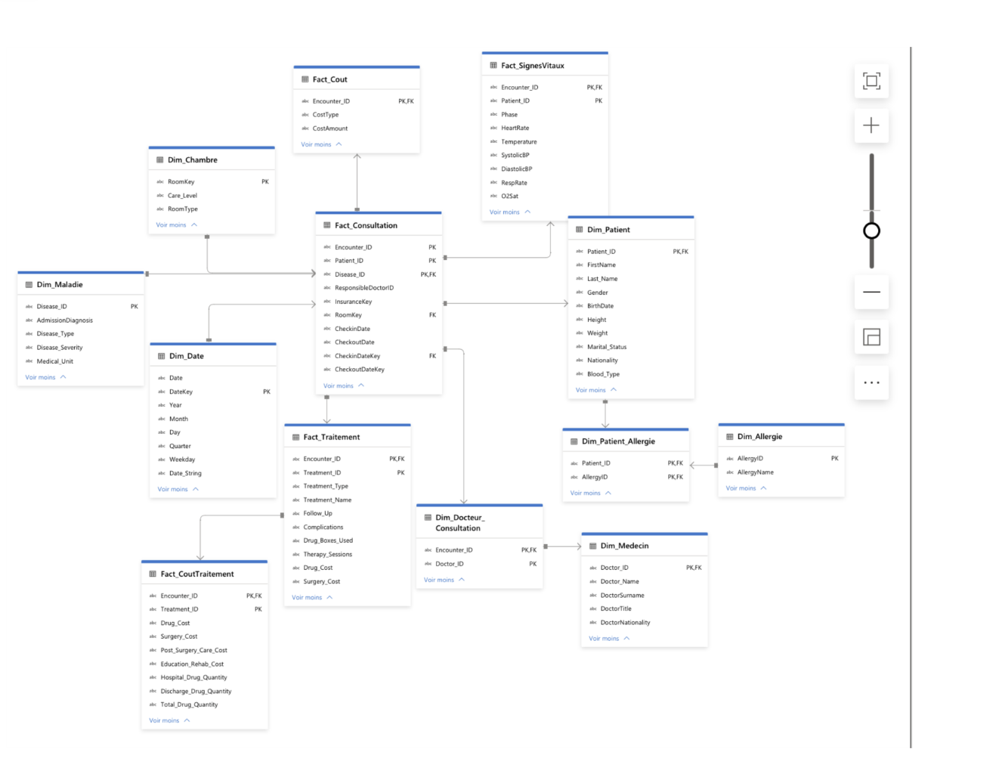
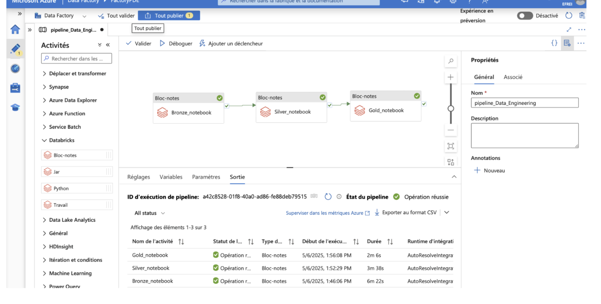

Ingestion → Databricks (ELT) → ADLS Bronze/Silver/Gold → Synapse (modèle en étoile) → Power BI Ingestion → Databricks (ELT) → ADLS Bronze/Silver/Gold → Synapse (star model) → Power BI
Mise en place d’une architecture Lakehouse complète sur Azure pour le data warehouse médical simulé MedSynora. Approche ELT et bonnes pratiques Cloud : ingestion, transformation Bronze → Silver → Gold, modèle en étoile dans Synapse et tableaux de bord Power BI. End-to-end Lakehouse on Azure for the synthetic medical DW MedSynora. ELT approach with Bronze → Silver → Gold, star schema in Synapse, and Power BI dashboards.

Architecture globale – Ingestion → Transformation → Serving → Visualisation Global architecture – Ingestion → Transformation → Serving → Visualization
Modélisation en tables externes (serverless) liées au Data Lake : Modeling with external (serverless) tables connected to the Data Lake:
Power BI se connecte au point de terminaison Serverless pour des requêtes interactives sans duplication. Power BI connects to the Serverless endpoint for interactive queries without duplication.

Tables externes exposées en lecture pour Power BI. External tables exposed in read-only mode for Power BI.


Orchestration ADF + notebooks Databricks, rafraîchissement programméADF orchestration + Databricks notebooks, scheduled refresh
Données standardisées et gouvernées pour l’aide à la décision.Standardized and governed data for decision-making.
Managed Identity, IAM, chiffrement AES-256, Defender for Storage, GRSManaged Identity, IAM, AES-256, Defender for Storage, GRS
# PySpark – accès abfss + téléchargement GitLab
adls_paths = {t: f"abfss://{t}@stockagedataengineering.dfs.core.windows.net/" for t in ["bronze","silver","gold"]}
# ... listage via API GitLab, filtrage *.csv, sauvegarde dbutils.fs.put()
# Imputation médiane/mode, dropDuplicates, traduction EN→FR
# Sauvegarde CSV stabilisée avec répertoires temporaires puis mv → final
# groupBy().agg() pour coûts (patient, consultation, traitement)
# export des agrégations dans gold/agregations/*.csv

Pipeline ADF : notebooks Databricks exécutés séquentiellement (B → S → G). ADF pipeline: Databricks notebooks executed sequentially (B → S → G).